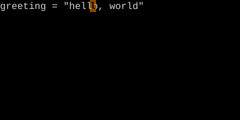
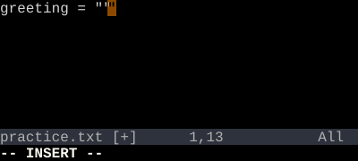

Quote Text Objects
i" / a" / i' / a' — operate on a quoted string without finding its boundaries.
i" is the contents of the surrounding double-quoted string. a" includes the quotes themselves. Same for ' and `.
Editing a string literal? Cursor anywhere inside it. ci" blanks the contents and drops you in to type the new ones. da" removes the quotes and contents together.
| Key | Note |
|---|---|
| c | |
| i | |
| " |
| Key | Note |
|---|---|
| d | |
| a | |
| " |
| Key | Note |
|---|---|
| v | |
| i | |
| ' |
| Key | Note |
|---|---|
| y | |
| i | |
| ` |
/ a — backticksReference
| Object | Range |
|---|---|
| i" | Contents of "…" (excluding quotes) |
| a" | "…" including the quotes |
| i' / a' | Same for '…' |
| i` / a` | Same for … |
Worked example — ci" and ca"
Operate on whatever is in the quotes.


You don't need to be on a quote — Vim finds the surrounding pair on the line. Same for ', `, (), [], {}, <>, t (tag).
See also: Inner Word vs A Word, Bracket Text Objects, The Vim Grammar